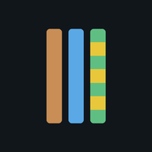

Elegí cuál querés abrir.
Armá presupuestos de instalaciones y reparaciones eléctricas, con búsqueda de precios en tiendas.
Se entra con una cuenta de Google.
Pasá de Intelsat 23 a SES-10 o apuntá una antena nueva, usando la brújula y el inclinómetro del celular.
Mejor desde el celular, al lado de la antena.
Sitio de la empresa: electricidad, redes e infraestructura para hogares y empresas en Córdoba.
Página para clientes.
Poné dos puntos y mirá cómo sube y baja el terreno entre ellos. Con la altura de las antenas, ves si hay vista libre.
Necesita internet.